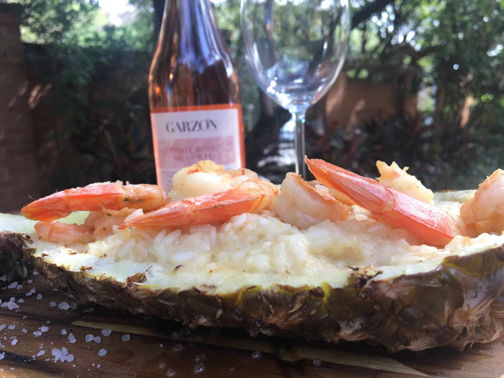
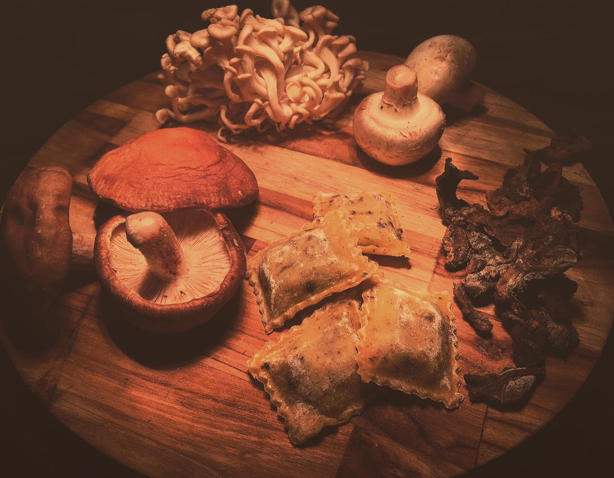
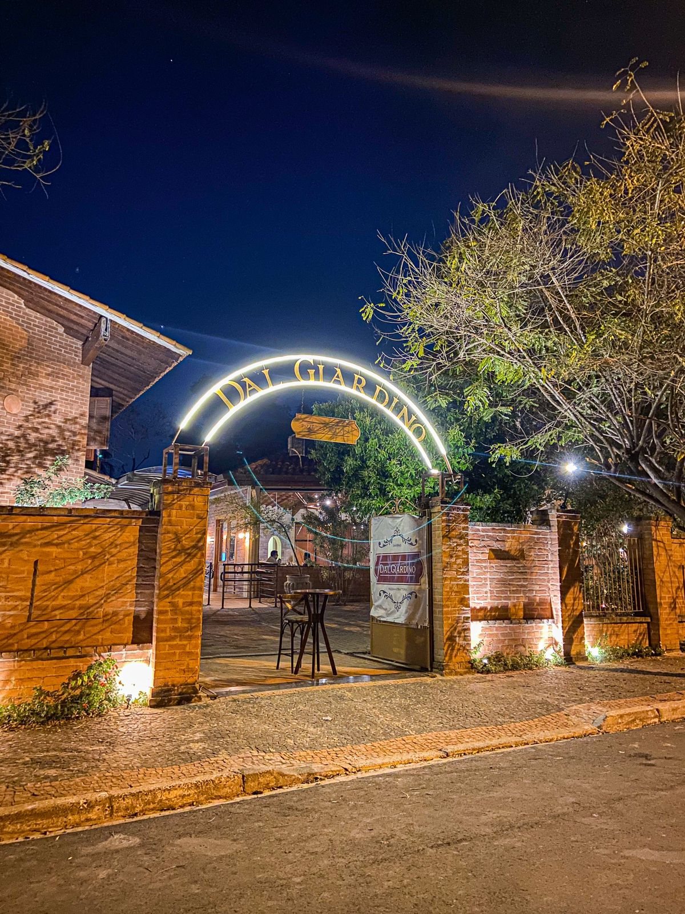
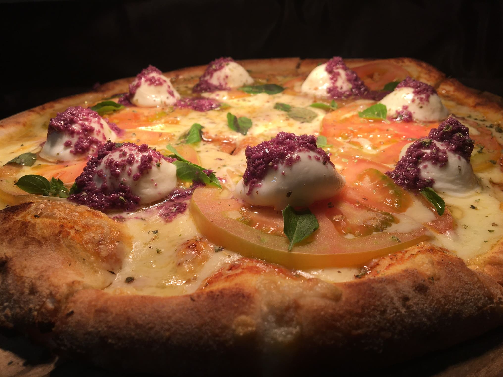
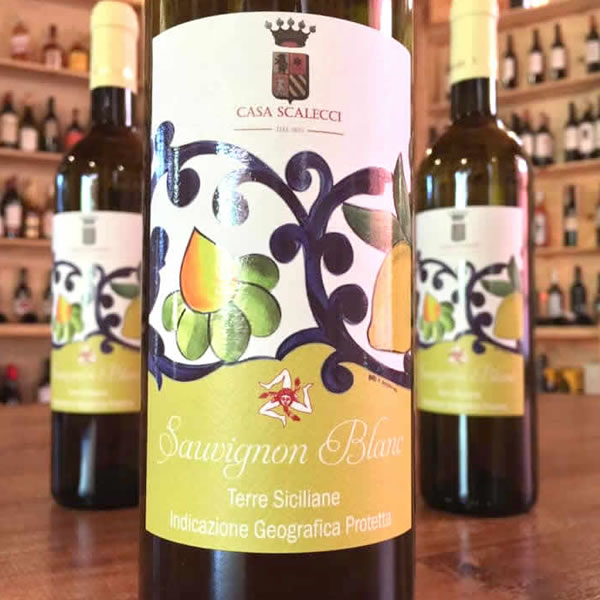
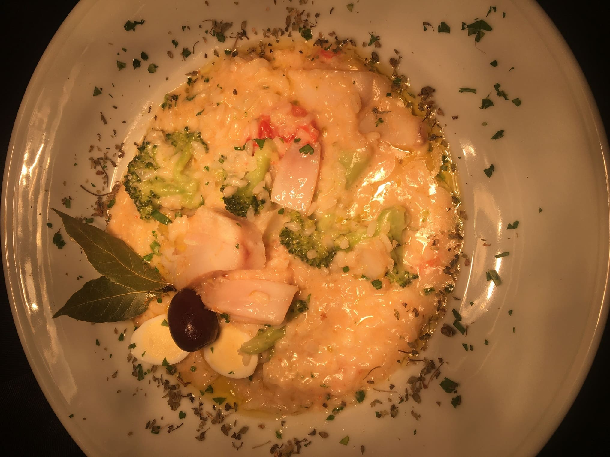
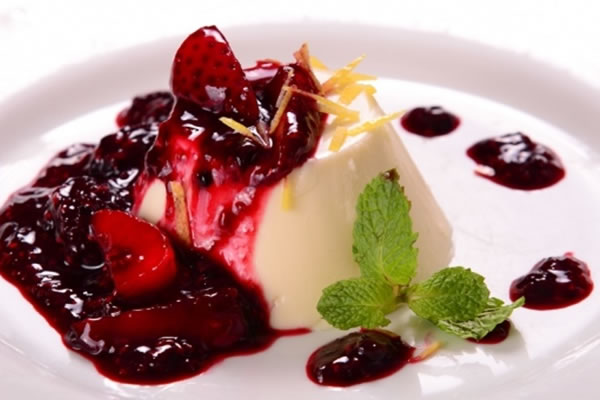

Ingredientes
Produtos que respeitam a origem e fazem cada prato contar uma história.
Benvenuti alla
Uma mesa italiana entre sabores, encontros e a calma do jardim.
Empório·Pizzeria·Trattoria


Mais que um restaurante, somos uma casa feita para demorar: uma taça de vinho, uma pizza que chega fumegante à mesa e conversas que atravessam a noite.
Do forno a lenha à nossa adega, cada detalhe celebra a cozinha italiana com ingredientes escolhidos, receitas afetivas e hospitalidade sem pressa.
Pizzas napolitanas de massa leve e fermentação cuidadosa.
Clássicos italianos interpretados com identidade própria.
Uma experiência para todos os sentidos, conduzida pelo prazer de estar junto.
Produtos que respeitam a origem e fazem cada prato contar uma história.
Receitas que honram a Itália, preparadas com técnica e delicadeza.
La dolce vita acontece quando a mesa reúne quem importa.
Rótulos nacionais e internacionais escolhidos para harmonizar com a nossa cozinha e com cada momento à mesa.
Seleção refinada de rótulos do Velho e Novo Mundo para harmonizar com as receitas da nossa casa.
Aromas expressivos de cereja madura, tabaco, couro e especiarias doces. Taninos nobres e final longo e aveludado.
Ameixas vermelhas, violetas silvestres e notas de carvalho toscano. Acidez gastronômica vibrante e equilíbrio memorável.
Notas complexas de rosas secas, trufas, especiarias nobres e couro. Estruturado, austero e com excepcional persistência.
Ameixas e figos em compota, notas de baunilha e cacau. Paladar envolvente, macio e sedoso com final persistente.
Frutas escuras maduras, mirtilos, notas de violetas e carvalho francês. Taninos redondos e final sedoso.
Límpido, mineral e muito refrescante. Notas de maçã verde, pera fresca e flor de laranjeira com final cítrico elegante.
Maturado em carvalho, apresenta cremosidade marcante, abacaxi maduro, pêssego branco e sutil amanteigado.
Coloração salmão pálida e brilhante. Aromas sutis de groselha fresca, pêssego e toques minerais marítimos.
Perlage fina, abundante e persistente. Buquê floral refinado de maçã golden e pera d'água com frescor vivaz.
Método tradicional com 24 meses sobre leveduras. Complexidade de pão tostado, maçã assada e excelente acidez gastronômica.
Vinho toscano tradicional elaborado com uvas passificadas. Tons de âmbar, notas de mel, damascos secos e nozes.
Maturado em cascos de carvalho. Notas ricas de figos secos, nozes, casca de laranja confeitada e caramelo toffee.
Do jardim ao forno, um pouco dos espaços e sabores que esperam por você.





Envie a sua preferência pelo WhatsApp e nossa equipe confirmará a disponibilidade.
Para aniversários, encontros corporativos e grupos, conte-nos o que você imagina.